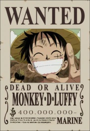
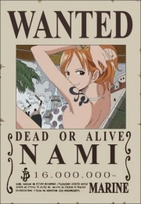

.jpg)
The world of One Piece is populated by humans and other races, such as dwarves (more akin to faeries), giants, merfolk, fish-men, long-limbed tribes, long-necked people known as the Snakeneck Tribe, and animal people (known as "Minks"). The world is governed by an intercontinental organization known as the World Government, consisting of dozens of member states. The central tension of the series pits the world government against pirates. The series regularly emphasizes moral ambiguity over the label "pirate", which includes dastardly villains, but also any individuals that do not submit to the world government's authoritarian - and often morally ambiguous - rule. The One Piece world also has supernormal characteristics like "Devil's Fruits", which are mysterious fruits that grant whoever eats them one of three types of transformative powers. Examples include a body made of rubber, the ability to transform into powerful animals or humanoid-animal hybrid forms, or being able to generate, control, or become a certain element. The world itself consists of two vast oceans divided by a massive mountain range called the Red Line. Within the oceans is a second global phenomenon known as the Grand Line, which is a sea that runs perpendicular to the Red Line and is bounded by the Calm Belt, strips of calm ocean infested with huge ship-eating monsters known as Sea Kings. These geographical barriers divide the world into four seas: North Blue, East Blue, West Blue, and South Blue. Passage between the four seas, and the Grand Line, is therefore difficult. Unique and mystical features enable transport between the seas, such as the use of "sea-prism" stone employed by government ships to mask their presence as they traverse the Calm Belt, or the mystical Reverse Mountain where water from the four seas flows uphill before merging into a rapidly flowing and dangerous canal that enters the Grand Line.
LUFFY |
ZORO |
SANJI |
NAMI |
|---|---|---|---|
|  |  |
 | |
ROBIN |
CHOPPER |
BROOK |
FRANKY |
 |
 |
||